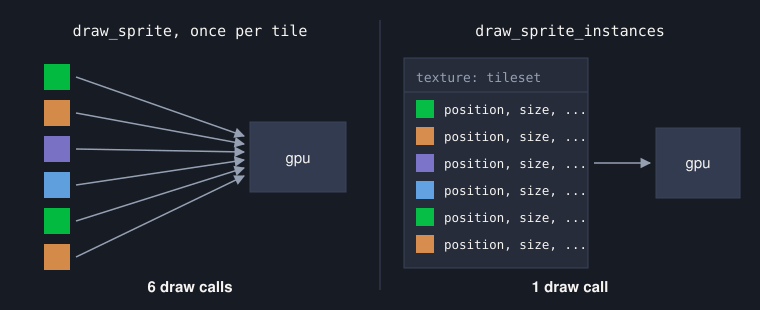
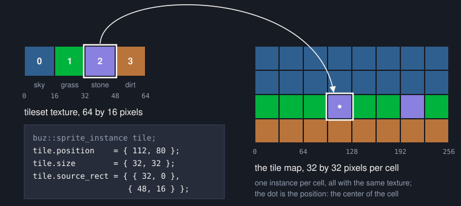

Drawing in 2D
Sprites, shapes and text, in the world and on the screen.
After each call to on_update, the engine clears the window to the clear_color from your engine settings, calls your game's on_render_world and on_render_screen, and then shows the finished frame. Inside those two functions you say what to draw, with one call per sprite, shape or line of text.
They are also the only place where you can draw, because they are the only functions that receive a renderer to draw with. Keeping a pointer to the renderer and drawing with it later, from on_update for example, doesn't work: a renderer only draws while the render function that received it runs, and a debug build stops on an assert when you try. So on_update moves things, and the render functions draw them.
The world and the screen#
A game draws two kinds of things: the level, with the player, the enemies and the platforms, and the hud, with the score, the lives and the menus. That is why there are two render functions, each with its own renderer:
#include "renderer_2d/screen_renderer.h"
#include "renderer_2d/world_renderer_2d.h"
void my_game::on_render_world(buz::engine& engine, buz::world_renderer_2d& world)
{
// the level: everything that moves when the camera moves
}
void my_game::on_render_screen(buz::engine& engine, buz::screen_renderer& screen)
{
// the hud: score, lives, menus, drawn on top in window pixels
}Both renderers have the same drawing functions, which they get from their base class buz::renderer_2d, so everything on this page works with either of them. The difference is the camera: buz::world_renderer_2d draws through the camera you give it with buz::world_renderer_2d::set_camera, and buz::screen_renderer ignores it and always draws in window pixels. Once the level scrolls, drawing each thing in the right function keeps the hud in place while the level moves underneath it. Building a camera is the exercise in A 2D camera.
Positions and draw order#
Until you set a camera, both renderers use window pixels, so a sprite lands in the same place in either, which is fine for a game that fits on one screen. (0, 0) is the top-left corner of the window and the y axis points down: a sprite at { 640.0f, 360.0f } sits in the middle of a 1280 by 720 window.
There is no depth: things are drawn in the order you submit them, and each one covers what was drawn before it. Draw the background first and the player after the level. Everything you draw in on_render_screen ends up on top of the world, because the engine calls it second.
Sprites#
buz::renderer_2d::draw_sprite takes a texture, the position of the sprite's center and the size to draw it at. The texture is stretched to that size, so a 32 by 32 pixel image drawn at { 64.0f, 64.0f } appears twice as large. Textures are loaded in your game's constructor and kept as std::shared_ptr<buz::texture> members (see Textures & fonts), which is why the calls below dereference them with *.
#include "render_core/texture.h"
// texture, center position, size (all in pixels)
world.draw_sprite(*m_background, { 640.0f, 360.0f }, { 1280.0f, 720.0f });
// optional: rotation (radians, clockwise) and a tint color
world.draw_sprite(*m_ship, m_ship_position, { 64.0f, 64.0f },
m_ship_angle, { 1.0f, 0.3f, 0.3f, 1.0f }); // tinted redThe rotation turns the sprite around its center. It is clockwise because the y axis points down.
The tint is a buz::color: red, green, blue and alpha, each from 0 to 1. It is multiplied with the colors of the texture, so white, the default, leaves the texture as it is, { 1.0f, 0.3f, 0.3f, 1.0f } keeps the red and darkens the rest, and an alpha below 1 makes the sprite see-through.
Sprite sheets#
A sprite sheet is one texture holding several images, usually the frames of an animation. The second version of draw_sprite takes a source buz::rect in texture pixels and draws only that part of the texture. A buz::rect is two corners, min at the top-left and max at the bottom-right, not a position and a size.
Picking the frame from the elapsed time animates the sprite:
// Four 64x64 frames next to each other, 8 frames per second.
// m_time is a float that on_update increases by delta_seconds.
const auto frame = static_cast<uint32_t>(m_time * 8.0f) % 4;
const buz::rect frame_rect = {
{ static_cast<float>(frame) * 64.0f, 0.0f },
{ static_cast<float>(frame + 1) * 64.0f, 64.0f } };
world.draw_sprite(*m_circle_sheet, frame_rect, { 1030.0f, 200.0f }, { 100.0f, 100.0f });Doing the timing inline like this is fine for one looping strip. A character with several animations (idle, run, jump, die) needs its frame counts and speeds in one place instead of at every draw_sprite; building that is the exercise in Sprite animation.
Shapes#
Shapes need no texture. They are useful for health bars, for placeholder graphics before you have art, and for debugging: drawing the outline of a hitbox shows you where the game thinks the player is.
#include "core/rect.h"
// a rect with the same center and size as the ship sprite
const buz::rect area = buz::rect_from_center_size(m_ship_position, { 64.0f, 64.0f });
world.draw_rect(area, { 0.2f, 0.6f, 1.0f, 1.0f }); // filled
world.draw_rect_outline(area, 2.0f, { 1.0f, 0.2f, 0.2f, 1.0f }); // 2px outline, growing inwards
world.draw_line(from, to, 2.0f, { 1.0f, 1.0f, 0.2f, 0.4f }); // 2px line
world.draw_circle(center, 30.0f, { 0.9f, 0.9f, 0.2f, 1.0f }); // radius 30
world.draw_triangle(a, b, c, { 0.4f, 1.0f, 0.4f, 1.0f });buz::rect_from_center_size builds a rect from a center and a size, the same way sprites are positioned, so a hitbox outline lines up with its sprite. The outline grows inwards: its outer edge is the rect itself.
Text#
buz::renderer_2d::draw_text draws text with a bitmap font. m_font below is a buz::font whose atlas texture you load in the constructor; the engine comes with one in content/shared/fonts/font_8x8.png, and Textures & fonts shows how to load it or use your own. Text is usually part of the hud, so it goes in on_render_screen:
#include "renderer_2d/font.h"
#include <format>
screen.draw_text(m_font, "hello", { 20.0f, 20.0f }, 16.0f);
// newlines continue on the next line; std::format builds dynamic text
screen.draw_text(m_font,
std::format("lives {}\nscore {}", m_lives, m_score),
{ 20.0f, 48.0f }, 16.0f, { 0.6f, 0.8f, 1.0f, 1.0f });Unlike a sprite, text is positioned by the top-left corner of its first character. pixel_height is the height of one character on the screen.
Many sprites of one texture#
draw_sprite draws one sprite at a time, and in this renderer each call produces a separate draw call: a command telling the gpu to draw that sprite. Drawing six sprites this way takes six draw calls.
With buz::renderer_2d::draw_sprite_instances, you can draw those six sprites in one draw call. You give it a texture and a list describing the sprites to draw. Each sprite can have its own position, size, rotation and tint, and can use a different part of that texture.
The gpu draws the same rectangle, called a quad, for every sprite in the list, using that sprite's settings. Each copy is an instance. Drawing these copies together is called instancing.

Preparing a draw call takes cpu time. With a few sprites that cost is small, but with thousands it can become a large part of the time spent rendering a frame. Instancing reduces the number of draw calls; the gpu still has to draw every sprite. Press F3 while the game runs to see the draw-call count for the last frame.
Drawing a tile map#
Many 2D games build their levels from tiles: small images of grass, stone, sky and so on, arranged on a grid. A tileset is the texture containing those images. The tile map stores a tile number for each cell in the grid, telling the game which image belongs there. Changing those numbers changes the layout of the level. A tile map easily holds hundreds of sprites that all use one texture, which makes it a good case for instancing.
For example, filling a 1280 by 720 window with 32 by 32 tiles takes 40 columns and 23 rows, with the last row partly outside the window. That is 920 sprites. Using draw_sprite for every tile means 920 draw calls per frame. Three layers of tiles would bring that close to 3,000, before adding particles, bullets or text. Each character drawn by draw_text is a sprite too.
To draw the map with instancing, create one buz::sprite_instance per cell and pass the list to draw_sprite_instances. All instances in that call share the tileset texture. Each instance uses source_rect to choose which tile to draw, just as you chose an animation frame from a sprite sheet earlier.

The highlighted stone tile in the diagram has two separate sets of coordinates:
source_rectselects the image inside the texture. Tile 2 starts at x = 32 and is 16 by 16 pixels, so its corners are(32, 0)and(48, 16).positionplaces the sprite in the world. The highlighted cell is in column 3, row 2, counting from zero. Each cell is 32 by 32 pixels, so its top-left corner is(96, 64)and its center is(112, 80).
Setting size to { 32.0f, 32.0f } draws the 16 by 16 image twice as large. As with draw_sprite, position is the center of the sprite.
The code below does this for every cell. m_tiles stores the tile numbers row by row. The loop calculates each cell's position and selects its image from the tileset, then adds the instance to the list. After the loop, one call draws the whole list.
#include <vector>
// m_tiles is a std::vector<int> with one tile number per cell, row by row,
// and k_map_width cells per row. m_tileset is the tileset texture: 16x16
// pixel tiles next to each other, so tile n starts at x = n * 16.
std::vector<buz::sprite_instance> tiles;
tiles.reserve(m_tiles.size());
for (size_t i = 0; i < m_tiles.size(); ++i)
{
const float column = static_cast<float>(i % k_map_width);
const float row = static_cast<float>(i / k_map_width);
const float tile_x = static_cast<float>(m_tiles[i]) * 16.0f;
buz::sprite_instance tile;
tile.position = { column * 32.0f + 16.0f, row * 32.0f + 16.0f }; // center of the cell
tile.size = { 32.0f, 32.0f }; // 16x16 art, drawn twice as large
tile.source_rect = { { tile_x, 0.0f }, { tile_x + 16.0f, 16.0f } };
tiles.push_back(tile);
}
world.draw_sprite_instances(*m_tileset, tiles); // one draw call for the whole mapInstance settings and draw order#
A buz::sprite_instance holds the settings for one sprite: position, size, rotation_radians, tint and source_rect. The texture is passed separately to draw_sprite_instances.
Always set size. Its default is zero, so leaving it out produces a sprite with no visible area. The other defaults are no rotation, a white tint and an empty source rectangle, which selects the whole texture. The example sets source_rect because each tile uses only part of the texture.
draw_sprite_instances copies the instance data during the call, so the local std::vector in the example can go out of scope afterwards.
Instances are drawn in list order: later entries cover earlier ones. To draw the player over the map, draw it afterwards. If the player uses another texture, it needs a separate draw call.
For a whole game, keeping sprites together by texture becomes more involved because you also need to preserve their draw order. A sprite batcher handles this grouping. In Sprite batching, you will build one using draw_sprite_instances and look more closely at the cost of draw calls.